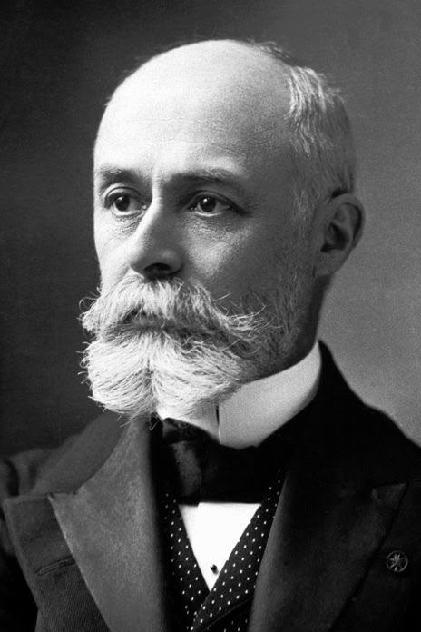
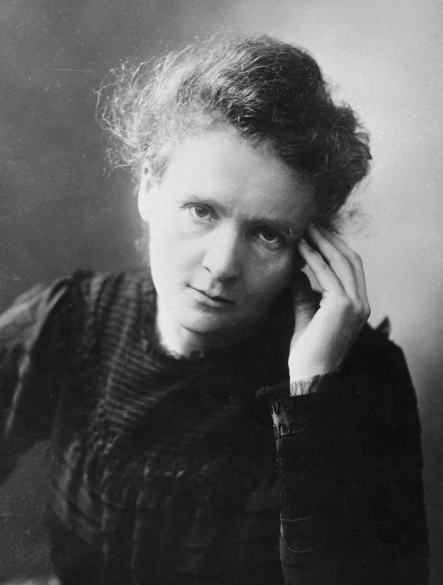
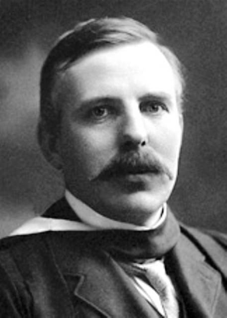
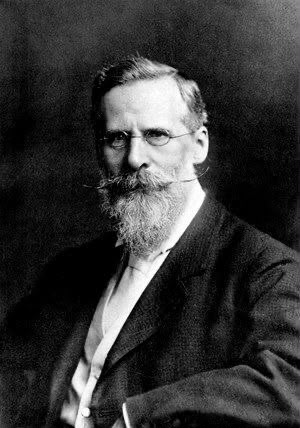
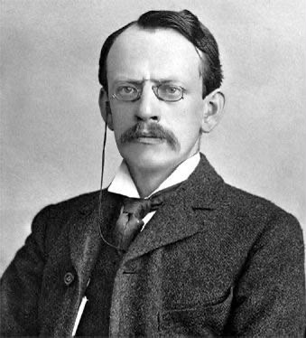
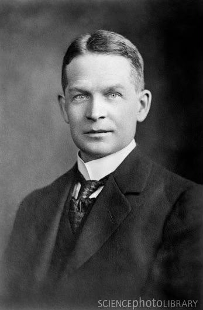
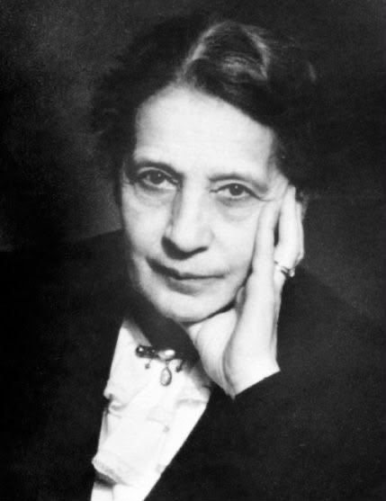
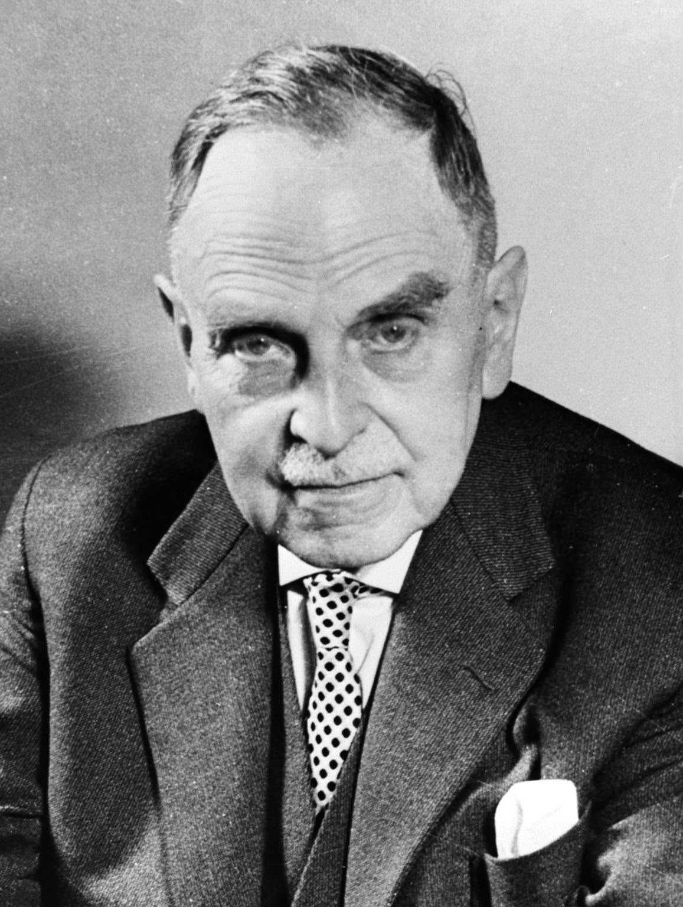
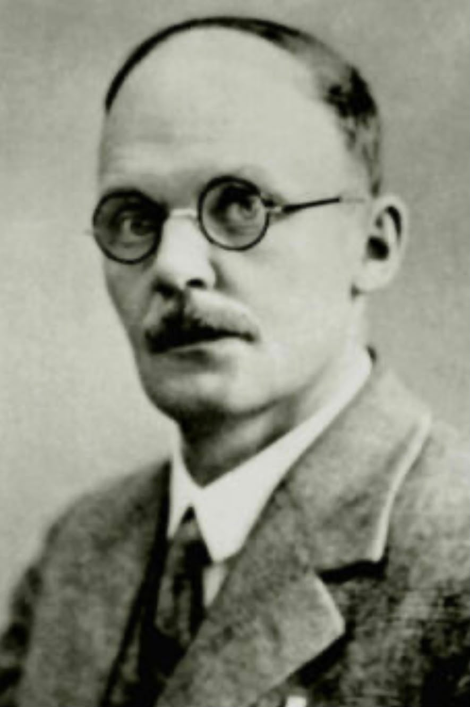
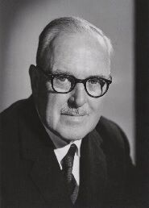

Henri Becquerel
Quem foi: Físico francês pertencente a uma família de cientistas. Seus estudos estavam relacionados principalmente à óptica, à fluorescência e à fosforescência.
O que descobriu: Em 1896, ao investigar a relação entre fluorescência e os recém-descobertos raios X, observou que compostos de urânio sensibilizavam chapas fotográficas mesmo sem exposição à luz solar. Esse fenômeno deu início aos estudos que levariam à descoberta da radioatividade.
Curiosidades: Becquerel inicialmente acreditava que a radiação emitida pelo urânio estava relacionada à fluorescência e à luz. Após seus experimentos, chegou a considerar o fenômeno uma espécie de "fosforescência invisível".

Marie Curie
Quem foi: Física e matemática polonesa, posteriormente naturalizada francesa. Iniciou seus estudos sobre radioatividade a partir das pesquisas de Henri Becquerel.
O que descobriu: Ao estudar minerais como a pechblenda, percebeu que alguns apresentavam atividade radioativa maior que a do próprio urânio. Suas investigações levaram à identificação do polônio e do rádio e à introdução do termo radioatividade.
Curiosidades: Marie Curie desenvolveu processos de separação química para investigar as substâncias radioativas presentes na pechblenda. Em 1903, recebeu o Nobel de Física juntamente com Pierre Curie e Henri Becquerel; em 1911, recebeu novamente o Nobel, desta vez de Química.

Ernest Rutherford
Quem foi: Físico neozelandês que teve papel central nas investigações sobre radioatividade e na construção do modelo atômico nuclear.
O que descobriu: Investigou as radiações emitidas por materiais radioativos, classificando as radiações alfa e beta, estudando a desintegração radioativa e o conceito de meia-vida. Posteriormente, interpretou os resultados dos experimentos de espalhamento de partículas alfa e propôs, em 1911, o modelo atômico nuclear.
Curiosidades: Rutherford trabalhou com diferentes pesquisadores ao longo de sua trajetória, entre eles Frederick Soddy, Hans Geiger e Ernest Marsden. Em 1908, recebeu o Nobel de Química por suas investigações sobre a desintegração dos elementos radioativos.

William Crookes
Quem foi: Químico e físico britânico interessado nos fenômenos produzidos por descargas elétricas em tubos contendo gases rarefeitos.
O que descobriu: Desenvolveu e aperfeiçoou os estudos com o tubo de Crookes, instrumento fundamental para as pesquisas sobre os raios catódicos. Seus experimentos contribuíram para as investigações posteriores sobre a natureza dessas radiações.
Curiosidades: Durante seus experimentos, Crookes observou que a parede de vidro do tubo adquiria um brilho amarelo-esverdeado quando atingida pelos raios. O tubo seria posteriormente utilizado por pesquisadores como Röntgen e Becquerel.

J. J. Thomson
Quem foi: Físico britânico que realizou importantes estudos sobre os raios catódicos e a estrutura da matéria.
O que descobriu: Em 1897, demonstrou que os raios catódicos eram constituídos por partículas subatômicas de carga negativa, posteriormente denominadas elétrons. Também determinou que essas partículas eram muito menores que os átomos.
Curiosidades: Os estudos de Thomson foram fundamentais para questionar a ideia de que o átomo era indivisível. Seu modelo atômico antecedeu o modelo nuclear posteriormente proposto por Rutherford.

Frederick Soddy
Quem foi: Químico inglês que trabalhou juntamente com Ernest Rutherford nas investigações sobre o comportamento dos elementos radioativos.
O que descobriu: Soddy participou das pesquisas que levaram à compreensão da desintegração dos elementos radioativos e da transformação espontânea da matéria. Seus trabalhos com Rutherford contribuíram para consolidar a ideia de que a radioatividade envolvia mudanças no interior do átomo.
Curiosidades: Soddy e Rutherford estudaram principalmente o rádio, o urânio e o tório. Suas pesquisas ajudaram a romper com a antiga ideia de que os elementos químicos eram imutáveis.

Lise Meitner
Quem foi: Física que participou de importantes investigações sobre a estrutura do núcleo atômico durante o desenvolvimento da Física nuclear.
O que descobriu: Em 1938, juntamente com Otto Frisch, explicou os resultados obtidos por Otto Hahn e Fritz Strassmann ao bombardear urânio com nêutrons. Meitner concluiu que o núcleo do urânio havia se dividido em núcleos menores, liberando grande quantidade de energia. Esse processo foi denominado fissão nuclear.
Curiosidades: Com a ascensão do nazismo, Meitner precisou deixar a Alemanha e recebeu asilo. Mesmo afastada, continuou mantendo contato científico com pesquisadores alemães. A explicação da fissão foi desenvolvida com a colaboração de seu sobrinho Otto Frisch.

Otto Hahn
Quem foi: Químico alemão que realizou pesquisas sobre elementos radioativos e participou das investigações que levaram à identificação da fissão nuclear.
O que descobriu: Em 1938, juntamente com Fritz Strassmann, detectou a presença de bário após bombardear uma amostra de urânio com nêutrons. O resultado experimental foi posteriormente explicado por Lise Meitner e Otto Frisch como consequência da fissão do núcleo de urânio.
Curiosidades: Hahn comunicou a Meitner os resultados sobre a presença do bário. Em 1944, recebeu sozinho o Nobel de Química relacionado à descoberta da fissão nuclear, embora a interpretação física do processo tenha contado com a contribuição de Lise Meitner e Otto Frisch.

Johannes Wilhelm Geiger
Quem foi: Físico alemão que trabalhou com Ernest Rutherford durante as investigações sobre o comportamento das partículas alfa.
O que descobriu: Participou, juntamente com Ernest Marsden, dos experimentos de espalhamento de partículas alfa em lâminas metálicas. As observações dos desvios das partículas forneceram evidências importantes para a interpretação posterior de Rutherford sobre a estrutura nuclear do átomo.
Curiosidades: Geiger realizou suas pesquisas em colaboração direta com Rutherford e Marsden na Universidade de Manchester. Os resultados obtidos pela equipe foram fundamentais para questionar o modelo atômico de Thomson.

Ernest Marsden
Quem foi: Físico inglês que trabalhou com Ernest Rutherford e Johannes Geiger nas investigações sobre o espalhamento de partículas alfa.
O que descobriu: Participou dos experimentos nos quais partículas alfa eram direcionadas contra folhas metálicas. Os desvios observados nas trajetórias das partículas contribuíram para a compreensão de que o átomo possuía uma pequena região central, posteriormente interpretada por Rutherford como o núcleo atômico.
Curiosidades: Marsden participou de uma pesquisa coletiva: os resultados experimentais foram obtidos por meio do trabalho conjunto com Geiger e Rutherford, mostrando justamente a perspectiva histórica que sua dissertação defende, a ciência como uma construção coletiva.